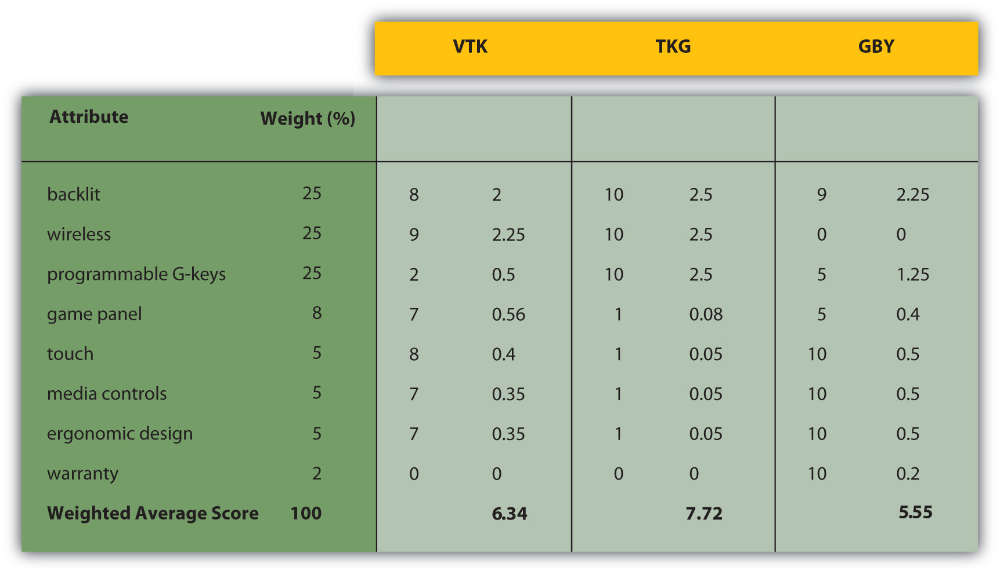

Consumer purchases refer to items used in daily living (e.g., clothing, food, electronics, appliances). They are the purchases that most intimately frame your life: you live with these items and use them every day. They are an expression and a reflection of you, your tastes, and your lifestyle choices. Your spending decisions reflect your priorities. Maybe you take pride in your car or your clothes or your kitchen appliances or your latest, coolest whatever. Or maybe you spend whatever you can on travel or on your passion for hiking. Those very personal tastes will frame your spending choices.
Consumer purchases should fit into your budget. By making an operating budget, you can plan to consume and to finance your consumption without creating extra costs of borrowing. You can plan to live within your income. At times, you may have unexpected changes (loss of a job or change in the family) that put your nondiscretionary needs temporarily beyond your means. Ideally, you would want to have a cushion to tide you over until you can adjust your spending to fit your income.
A budget can also show you just how fast some “small luxuries” can add up. Stopping for a latte on your way to work or school every day ($3.95) adds up to $20 per week, or about $1,000 per year. That money may be better used to finance a bigger ticket item that you then would not have to finance with debt. With the budget to help you put expenses into perspective, you can make better purchasing decisions.
Purchasing decisions are always limited by the income available, and that means making choices. Your choices of what, where, when, and even how to buy will affect the amount that you spend and the utility (the joy or regret) that you ultimately get out of your purchase.
Shopping is a process. You decide what you want, then have to make more specific decisions:
Each of these decisions creates a trade-off. For example, it may be more convenient—and quicker—to shop locally, but there may be lower prices and a better selection of products online. Or you may find lower prices online but have a harder time getting repairs done if you haven’t bought locally.
Some of your purchases involve few conscious decisions—for example, groceries—because you buy them repeatedly and often. Other purchases involve more decisions because they are made less often and involve costlier items such as a car. When you have to live with your decision for years instead of days, you tend to make it more carefully.
The decision process can be broken down into the following steps:
Before you buy or “prepurchase,”
As you buy,
After you buy, or “postpurchase,” consider
What do you want? What do you want it to do for you? What do you want to gain by having it or using it or wearing it or eating it or playing with it or…? You buy things hoping to solve a need in your life. The more specifically you can define that need, the more accurately you can identify something to fill it. If your purchase is inappropriate for your need, you will not be happy with it, no matter how good it is. And because your budget is limited, you want to minimize your opportunity cost and buyer’s remorseRegret following a purchase, especially common with an impulse purchase. or regret at not making a better purchase in order to use your limited income most efficiently.
Sometimes you can identify a need, but have no idea of the kinds of products that may fill it. This is especially true for infrequent needs or purchases. For example, you may decide you need to get away and take a long weekend. To do it cheaply, you decide to go hiking and camping. To make it more fun, you decide to go to an area where you’ve never been before. You may not be aware of the camping options available in that area, however, or of equally cheap alternatives such as hostels, bed and breakfasts, or other accommodations. When you find that you have a range of choices, you can compare them and choose one that offers the most satisfaction.
Once you have identified the product, you can compare the attributes of those products. What characteristics do you require or want? How are you going to use the product? For example, do you need cooking facilities, access to a shower, a safe but scenic location, opportunities to meet other hikers, and so on? What attributes are important to you and what are available?
Sig is looking for a new computer keyboard, a hot gaming keyboard that can also be comfortable for writing college papers. Sig begins to research keyboards and finds over five hundred models from over fifty brands with different designs, attributes, and functions offered at a range of prices. He decides to try to filter his choices by looking only at gaming keyboards, which narrows it down to about eighty models.
Noticing that most of the keyboards range in price from twenty-five to fifty dollars, he decides to look in the fifty to a hundred dollar range, figuring he’ll get a slightly higher-end product, but not an outrageously expensive one. This narrows his search to about twenty-five models.
None of the models has all the attributes that Sig desires. It’s a trade-off: he can have some features, but not others. He decides to try to organize his research by creating a table ranking the product attributes in order of importance, and then scoring each model on each attribute (on a scale of one to ten), eventually coming up with an overall score for each model. Figure 8.4 "Sig’s Product-Attribute Scoring" shows scoring for three models.
Figure 8.4 Sig’s Product-Attribute Scoring
Multiplying each attribute’s weight by its score gives its weighted score, then adding up each weighted score gives the total score for the product. Based on this attribute analysis, Sig would choose TKG, which has the highest overall score.
In the case of an asset purchase, you may eventually think of reselling the item, so the ease and/or costs of doing so may figure into your prebuying evaluation. You may decide to go with a “better” product—a more recognizable or popular brand, for example—that may have a higher resale value. You also need to consider the market for used or preowned products: if there is one, how liquid the market is, or how easy it is to use. If the market is not very liquid, then the transaction costs of selling in the used product market may be significant, and you may be disappointed with the result.
The more choices you have, the better your chances of finding satisfaction. The more products there are to satisfy your need, and the more attributes those products offer, the more likely you are to find what “works” for you. Sometimes you need to be a bit creative in thinking about your alternatives, especially with limited resources.
Sources of product information include the manufacturer, retailer, and other consumers. Certain information must be provided for certain products by law. For example, food ingredients must be labeled, and perishable products dated. Appliances almost always come with operating and care instructions that can give you an idea of their ongoing maintenance costs as well as operating features.
The Internet has made it easy to research products online and to become a much better informed consumer. You can do lots of research online, even if you actually purchase locally. A feature of many online stores and consumer discussions is product reviews, where consumers give feedback on their satisfaction with the product. Such reviews can balance the information from the manufacturer and retailer, who want to inform consumers to encourage them to buy.
Other sources of information are magazines and trade journals (such as Consumer Reports, both in print and online), which have articles and ratings on products as well as ads. Your research may also involve actual or virtual window shopping, like going to stores to examine the products you are thinking of buying.
Your market may be local, national, or international, with advantages and disadvantages to each. Generally, a larger market (more vendors) will offer more variation and selection of product attributes.
As with any market, the real determinant of how your market works is competition. The more vendors there are, the more they compete for your business, and the more likely you will find options for purchasing convenience, product attributes, and price.
In markets where vendors are so plentiful that your problem is filtering rather than finding information, there are middlemen to provide that service. An example is the budget travel businesses with Web sites that make it convenient to research and buy flights, rental cars, and hotel accommodations. Middlemen or brokersAn intermediary that acts as an agent for buyers or sellers to arrange a trade. exist in markets where they can add value to your purchasing process, either by providing information in the prepurchase stage or by providing convenience during the purchase. The more they can reduce the cost of a “bad” decision (e.g., a difficult flight schedule, an expensive car rental, an uncomfortable hotel accommodation), the more valuable they are. They can add more value in markets where you have too little or too much information or less familiarity with products or vendors. Generally, the more expensive the product or the less frequent the purchase, the more likely you will find a middleman to make it easier.
Some products have a “new” and a “used” market, such as durable goods and some consumer goods like textbooks, vintage clothing, and yard sale goods. Evaluating the quality of a used or preowned product can require more research, information, and expertise, because the effect of its past use on its future value can be hard to estimate. Used products are almost always priced less than new products, unless they have become “collectibles” that can store value. The trade-off is that used products offer less reliable or predictable future performance and may lack attributes of newer models.
Different kinds of stores often offer the same products at different prices. Convenience stores, for example, typically charge higher prices than grocery stores but may be in more convenient locations and open at more convenient hours. Smaller boutique stores cannot always realize the economies of scale in administrative costs or in inventory management that are available to a larger store or a chain of stores. For those reasons prices tend to be higher at a smaller store. Boutiques often offer more amenities and a higher level of customer service to be competitive. You may also shop at a specialty store when you need a certain level of expertise or assistance in making a purchase.
Cooperative stores are owned and managed collectively and may provide goods or services that would not otherwise be available. Shopping is usually open to anyone, but members are eligible for discounts, depending on their participation in the store’s operations or management. The members own the store, so they can forgo corporate profits for consumer discounts.
Increasingly, merchandise of all kinds may be bought directly from the manufacturer, often through a catalogue or online. The shopping experience is very different (you can’t try on the sweater or see how the keyboard feels), but if you are well informed about the product, you may be comfortable buying it. Internet shopping has become a great convenience to those who are too busy or too far away to visit stores.
Auctions are becoming increasingly popular, especially online auctions at eBay and similar sites. Auctions are open negotiations between buyers and sellers and offer dynamic pricing. They also offer uncertainty, as the price and even the eventual purchase are risky—you may lose the auction and not get the item. Auctions are used most often for resales and for assets such as homes, cars, antiques, art, and collectibles. The popularity of online auctions has led to more buyers, bringing more competition and thus higher prices.
Most consumer purchases are for consumable goods or services and are budgeted from current income. You pay by using cash or a debit card or, if financed, by using a credit card for short-term financing. Such purchases—food, clothing, transportation, and so on—should be covered by recurring income because they are recurring expenses. You need to be able to afford them. As you read in Chapter 7 "Financial Management", consumers who use debt to finance consumption can quickly run into trouble because they add the cost of debt to their recurring expenses, which are already greater than their recurring income.
Unless financed by savings, durable goods such as appliances, household wares, or electronics are often bought on credit, as they are costlier items infrequently purchased. Assets such as a car or a home may be financed using long-term debt such as a car loan or a mortgage, although they also require some down payment of cash.
The use of middlemen or brokers to find and buy an item also contributes to the cost of a purchase because of the fees you pay for the service.
Products and preferred financing sources are shown in Figure 8.5 "Products and Preferred Financing Sources".
Figure 8.5 Products and Preferred Financing Sources

Having done your homework and made your choice, you are ready to purchase. In some cases, you may be able to make specific arrangements with vendors as to convenience, price, delivery, and even financing.
In Western cultures, prices for consumer goods are usually not negotiable; consumers expect to pay the price on the price tag. In other cultures, however, haggling over price is common and expected, which often surprises travelers abroad.
Durable goods and asset purchases typically offer more purchase options than consumer goods, usually as an incentive to buyers. Vendors may offer free delivery or free installation, product guarantees, or financing arrangements such as “no payments for six months” or “zero percent financing.” Offers may be enhanced periodically to “move the merchandise,” when prices may also be discounted. Sales, “special offers” or “low, low prices” may be used to sell merchandise that is about to be replaced by a newer model. If those product cycles are seasonal and predictable, you may be able to schedule your purchase to take advantage of discounts.
Or you may decide to wait and pay full price for the newer model to avoid purchasing a product that is about to become outdated.
The more the purchase process allows for negotiation, the more possibility there is for consumers to enhance satisfaction. However, the negotiation process can go the other way too: it allows more opportunity for the vendor to negotiate an advantage. The better-informed consumer is more likely to negotiate a more satisfying purchase, so it is important to be thorough in the prepurchase research.
A purchase may have transaction costs such as sales tax or delivery charges. For higher-priced products such as durables and assets, those transaction costs can add up, so you should figure them into your overall cost of the purchase.
Financing costs can also be significant if debt financing is used. Debt is long term and is a significant commitment as well. It may pay to compare financing rates and terms just as you would for the product itself, or you may be able to use financing costs as a negotiating chip in your price negotiations.
Now you can enjoy your purchase. Some products require maintenance and periodic repair to remain useful. You should research those additional costs before buying, because after the purchase you are committed to those activities.
If you are not satisfied due to a product defect, you can contact the retailer or manufacturer. If there is a warranty, the retailer or manufacturer will either fix the defect or replace the item. Many manufacturers and retailers will do so even if there is no warranty to maintain good customer relations and enhance their brand’s reputation. An Internet search will usually turn up contact information for a product’s customer service team.
There are also federal and state consumer protection laws that cover a seller’s responsibilities after a sale. In the United States, the Federal Trade Commission (FTC) Bureau of Consumer Protection has the most direct responsibility for consumer issues. At the state level, the office of the attorney general usually has a consumer protection division. Locally, you can also contact your chamber of commerce or Better Business Bureau (BBB) for more information.
You can also resort to the judicial system for compensation. For limited claims, you can file in small claims court. Claim limits vary by state, but range between $500 and $10,000. Small claims court is a less formal and costly process than filing a suit. At the other end of the spectrum is the class-action suit in which many plaintiffs pursue the same complaint, sharing the costs and the awards of the lawsuit.
The advertising industry is proof of the importance of “branding.” Customer brand loyalty is a real phenomenon. In 2007, the top 100 biggest advertisers spent $107,635,000,000 on advertising worldwide, with the automotive, personal care, and food industries leading the pack.Advertising Age, “Global Marketers: Top 100,” December 8, 2007, http://adage.com/images/random/datacenter/2008/globalmarketing2008.pdf (accessed April 1, 2009). Producers go to great expense to brand their products. When in doubt, consumers tend to choose a familiar brand. Once disappointed by a brand, consumers tend to avoid it. For some products, there are alternative private-label or store-label brands, applied to many products but sold by one store or chain. The store brand is usually a cheaper alternative and often, although not always, of comparable quality. This is a widespread practice in the food industry with grocery store brands. Shopping for the store brand can often yield significant savings.
Aiden’s purchase comes with a two-year manufacturer’s guarantee, but the salesperson is encouraging her to buy an extended warranty. She is already paying more than she wanted to for a high-quality machine, and the extended warranty adds nearly a hundred dollars to the purchase price. She decides to forgo the extra protection, reasoning that most repairs, if needed after two years, would cost less than that anyway.
An offer of a warranty with purchase can be valuable if it lowers the expected maintenance or repair costs of the product. Sometimes a product is offered with a warranty at a higher price; sometimes you can purchase an optional warranty for an additional cost. If the cost of a malfunction is low, then the warranty is probably not worth it.
Price advantage can sometimes come through timing. Seasonally updated products or models can force retailers to discount old inventory to get it off the shelves before the new inventory arrives. Automobiles, for example, have a one-year product cycle, as do many desktop computers and peripherals.
Some products are naturally dated, such as calendars or tax preparation software, and so may be discounted as they near their expiration date. However, that is because they have less and less usefulness and may not be worth buying at all.
Commodities prices can fluctuate depending on the season or the weather, and although you may not have a choice of buying home heating oil when you do, some products do offer you a choice. Tomatoes in January are more expensive than in August, for example; eating fresh foods seasonally can produce savings.
Price can also be affected by transaction costs, or the costs of making the purchase. They can be included in the price or may be listed separately. Larger and more expensive items tend to have more transaction costs such as delivery and storage. Sales tax, which is a percentage of the price, may be required, and the higher the item’s price, the more sales tax you will pay. Asset purchases also involve a legal transfer of ownership and often the costs of acquiring financing, which add to their costs. Sometimes, to entice a purchase, the seller may agree to bear some or all of the transaction costs.
Retailers change prices based on buyers’ needs. They practice price discriminationThe practice of offering the same product at a different price, depending on customer needs., or the practice of charging a different price for the same product, when different consumers have different need of a product. Airlines are a classic example, charging less for a ticket bought weeks in advance than for the same flight if the ticket is bought the day before. Someone who purchases weeks ahead is probably a leisure traveler, has more flexibility, and is more sensitive to price. Someone who books a day ahead is probably a business traveler, has little flexibility, and is not so sensitive to price. The business traveler, in this case, is willing to pay more, so the airline will charge that person more.
Retailers also offer discounts, sales, or “deals” to attract consumers who otherwise would not be shopping. Sometimes these are seasonal and predictable, such as in January, when sales follow the big holiday shopping season. Sometimes sales are not sales at all, but prices are “discounted” relative to new, higher, prices that will soon take effect. Quantity discountsThe practice of offering a different unit price for the same product, depending on quantity purchased., a lower unit price for a higher volume purchased, may be available for customers buying larger quantities, although sometimes the opposite is true, that is, the smaller package offers a smaller unit price. While it may be cheaper to buy a year’s worth of toilet paper at one time, you then create storage costs and sacrifice liquidity, which you should weigh against your cost savings.
In short, sellers want to sell and will use price to make products more attractive. As a buyer, you need to recognize when that attraction offers real value.
Unfortunately the world of commerce includes people with less-than-honorable intentions. You likely have been taken advantage of once or twice or have fallen victim to a scamA scam (confidence game or con) is a fraud based on trust., or a fraudulent business activity or swindle. Technology has made it easier for con artists to steal from more people, contacting them by telephone or by e-mail. The details of the scam vary, but the pattern is much the same: the fraud sets up a scenario that requires the victim to send money or to divulge financial or personal information, such as bank account, Social Security (federal ID), or credit card numbers, which can then be used to access accounts.
Here are some typical scams reported by Consumer Reports, the magazine of the nonprofit Consumers Union, an advocacy group for consumers:Consumer Reports, “Sneakiest Consumer Scams,” September 2007, http://www.consumerreports.org (accessed April 1, 2009).
The best way to protect yourself from scams is to be as informed as possible. Do your homework. If you feel like you are in over your head, call on a friend or family member to help you or to speak for you in negotiations. There are a number of nonprofit and government agencies that you can ask about the legitimacy of an idea or an arrangement. There are also some proven ways to try to protect yourself:
If you do get “scammed,” it is your civic duty to complain to your state’s consumer division in the attorney general’s office and, if advised, to federal regulators at the Federal Trade Commission (FTC). That is the only way to stop and expose such frauds and to keep others from becoming victims. As the saying goes, “If it sounds too good to be true, it probably is.”
The consumer purchase process involves
Prepurchase
Purchase
Postpurchase
Identify the last three items (consumer goods and durable goods) you purchased. Alternatively, select any three items you purchased during the last two months. Choose diverse items and analyze each item in terms of the following factors:
How informed are you about your rights as a consumer in your state and as a citizen of the United States? For example, what are your rights in returning unwanted purchases and recalled items? In moving your house? In buying food? In having access to electricity? Research a topic relevant to your personal situation from the comprehensive list at the Federal Trade Commission’s Consumer Guides and Protections for Citizens: http://www.usa.gov/Citizen/Topics/Consumer_Safety.shtml. How will what you learn guide you in your next related purchase or in taking some other action? Visit the following Web sites to learn more about the information and protections available to you as a consumer. What services do the organizations and agencies provide? What should you do if you have a complaint as a consumer or suspect you are being scammed?